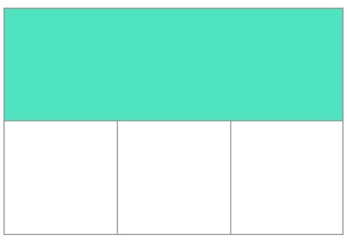

grid definition
사전적 정의: 그리드는 수평선과 수직선이 교차해서 이루어진 집합체 - 하나의 집합체는 세로 열을 그리고 다른 하나는 가로 행을 정의한다. 각 요소는 이러한 열과 행으로 된 라인을 따라 생성된 그리드에 배치할 수 있다.
grid의 행과 열은 grid-template-columns 및 grid-template-rows 속성으로 정의한다. 이렇게 하면 grid track도 함께 정의된다. grid track은 grid에 그려진 두 라인 사이의 공간을 나타낸다. 아래 그림에서는 grid의 첫 번째 가로 행에 놓여있는 track이 돋보이게 표시된 것을 확인할 수 있다.
